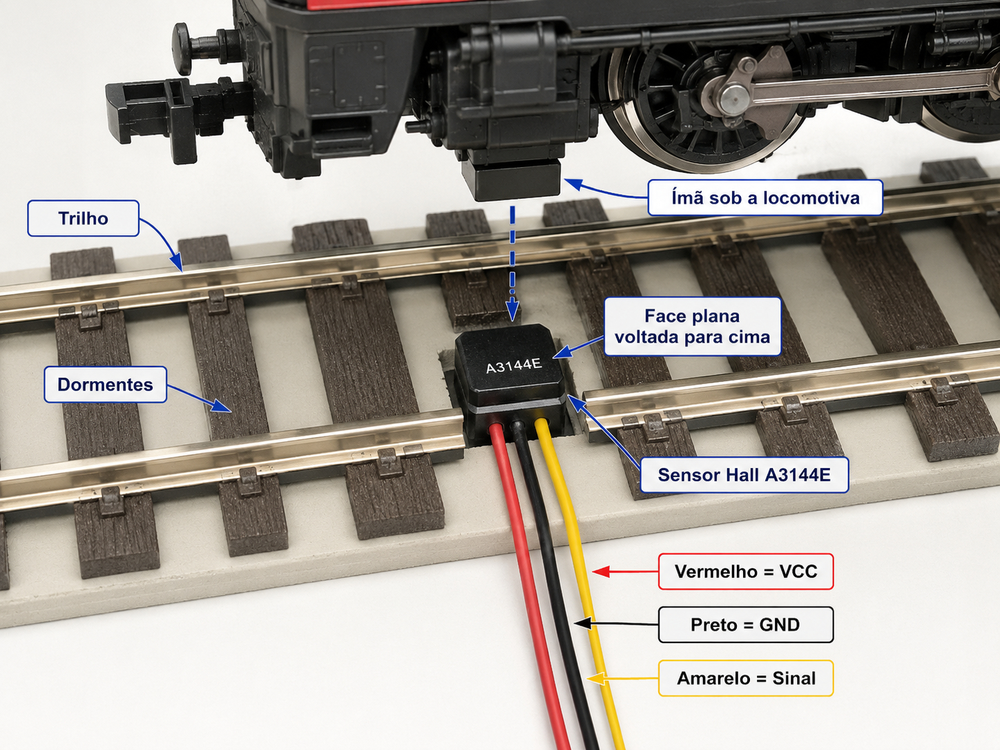

Instalação dos sensores Hall nas 19 posições de detecção e automação
Os sensores de presença da Ferrovia EFMN 74 utilizam sensores Hall instalados junto aos trilhos para detectar a passagem das locomotivas por meio de um ímã fixado na parte inferior de cada locomotiva.
A maquete possui 19 posições equipadas com sensores Hall, distribuídas ao longo da ferrovia para permitir a detecção das locomotivas e a automação das operações. Essas posições são utilizadas pelo sistema para identificar a presença e o deslocamento dos trens, controlar sequências operacionais e executar as ações previstas na automação.

Em cada posição, o sensor deve ser instalado entre os dormentes ou em local equivalente, suficientemente próximo da parte inferior da locomotiva para garantir uma detecção confiável, sem interferir na passagem das rodas, nos trilhos ou nos componentes móveis dos desvios.
Cuidados na instalação
Na instalação definitiva, deve-se observar principalmente:
- posicionar o sensor de modo que o ímã da locomotiva passe diretamente sobre sua região de detecção;
- manter uma distância adequada entre o sensor e o ímã, conforme os testes realizados;
- manter o sensor fora da área de movimento das agulhas e de outros componentes móveis dos desvios;
- deixar o sensor o mais discreto possível no acabamento da via;
- proteger os terminais e as soldas sob a maquete;
- identificar corretamente cada uma das 19 posições no sistema de controle;
- testar individualmente todos os sensores antes da fixação definitiva e da aplicação de lastro ou acabamento.